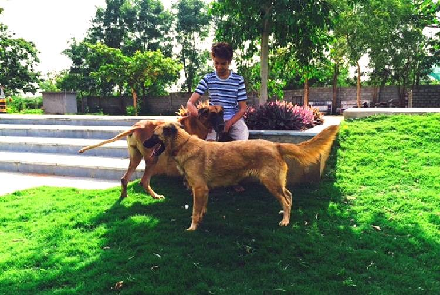
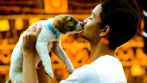

What's in it for Universities?

"Universities can adopt the same as it will help students to be stress free and they can play with the dogs in free time which will prevent them from getting in wrong practices."
How a 19-year-old convinced his Hyderabad college to become a haven for abandoned animals.
Zabi provides for the animal's care from his pocket money, bolstered by a few voluntary contributions and the college.
College can be tough. Fitting in, making friends and sincerely pursuing studies can all make time a precious commodity. But for Hyderabad student, Zabi Khan, college posed a whole new challenge - how to make time for his three-year-old shelter for abandoned animals.
Place to Bark, 19-year-old Zabi's non-profit organisation, was running a shelter for abandoned breed dogs in Tolichowki since 2014. "But once I started college, I would reach back home only by 5.30pm-6pm in the evening. It was getting difficult to supervise the shelter. So, I thought, why not bring the shelter to the college" Zabi says.
A second-year student of Computer Science at KG Reddy College of Engineering and Technology, Zabi did exactly that. Backed by five years of volunteering experience, he pitched the idea to the college authorities and found them extremely supportive.
Now, the college has a dedicated shelter for abandoned and injured breed dogs, including a resident German Shepherd, as well as open spaces for birds and rabbits. Zabi and other students of the college bring these abandoned or injured animals to the shelter, where they are treated, nurtured and, once socialised, put up for adoption.
Currently there are five dogs in the shelter ("Two of them were adopted on Friday," Zabi says happily), apart from 12 ducks, five or six turkeys and hens, six rabbits and the German Shepherd "who gets along well with the college watchman".
It all began when Zabi was 14, and he saw a German Shepherd puppy someone had abandoned on the road one day. "I was desperate to have a dog of my own then, so when the shopkeeper nearby told me the puppy had been left by a family who then drove away, I couldn't just leave him there. I named him 'Casanova'" Zabi recounts.
However, three days after Zabi brought Casanova home, he started running a high fever. A trip to the vet saw Zabi being told that the dog would recover in a few days. They left the clinic, but not before Zabi spied the vet whispering something to Zabi's father. Two days later, Casanova died.
It was then that Zabi's father confessed that the puppy had Canine Parvovirus, which can weaken the immune system. "The family who abandoned him probably knew about it. The vet told us that survival rates aren't high and that by the time we got him checked, it was too late" Zabi says.
Losing his first puppy was heartbreaking for Zabi, but also sowed in him the determination that no other animal should have to suffer the way Casanova did. Zabi began volunteering with animal welfare and rescue NGOs in Hyderabad.
One of the biggest problems he faced as a volunteer was in getting people to foster the animals till they were adopted. He started Place to Bark for abandoned breed dogs, and established the shelter that shifted in 2015 to KG Reddy College. Zabi says that since organisations like People for Animals are involved in the welfare of stray dogs, his NGO only caters to abandoned breed animals. When he gets news of street dogs in need, he passes on the information to the other organisations.
The shelter at KG Reddy College has space to house eight to 10 animals in spacious cages and enclosures. However, the cages are only for injured or aggressive animals or for others to sleep in at night; they roam around within the college campus during the day.
Zabi provides for the animals' food, care and treatment from his own pocket money, bolstered by contributions from volunteers and a little help from college authorities. "The college pays for the animals who are there permanently. The rest is ad-hoc. But I think when you maintain transparency and show people that every penny they contribute is going for a good cause, they will contribute regularly" he insists.
While socialising the animals to people and other residents of the shelter is one task, socialising people to the animals is a different ball game. And it's taken Zabi many talks and presentations to get through to students and faculty. "I understand that everyone cannot love or be comfortable around animals. But the least they can do is not hurt them. Humans really need to behave with humanity" he argues.
Now, because of the sensitisation and support of the college authorities, Zabi says that the students who do not like animals simply ignore them, which he thinks is fine as long as they don't harm or provoke the animals.
Like many other welfare groups, Zabi's shelter also makes the most of social media and messaging platforms, getting the word out about animals through a Facebook group, Adopt an Animal-Hyderabad, and through Whatsapp.
When the animals are put up for adoption, Zabi and the other volunteers conduct a pre- as well as post-adoption check. A questionnaire is given to the prospective adoptive parents and only if the volunteers are satisfied with the answers is the dog then given to them. A volunteer also conducts a check of the place of residence and environment prior to finalising the (human) candidates.
The questionnaire prospective adoptive parents are asked to answer before they can adopt the animal.
"These animals have been abandoned or mistreated once already. It takes time for them to heal emotionally also, and we want to ensure that they don't go through the trauma again. Hence the checks, " Zabi explains. He adds that the adopters have rarely brought the animals back, with the animals only returning on rare occasions when a tragedy in the family occurs, or if they are moving abroad.
Zabi says that his parents are extremely supportive of his work, even though they initially objected to him bringing abandoned animals and letting strays into their home. "But I was an adamant rebel. They had to give in" Zabi admits sheepishly. "I think they are happy that the pocket money they give me goes into saving lives and giving second chances to these animals, not on going to pubs and restaurants" he adds.
But doesn't Zabi, like any 19-year-old, want to go out and have a good time?
"I do sometimes. And it's not like I never go out. But at the end of the day when you see a dog or another abandoned animal heal and become lively again, it is all worth it," he smiles......